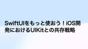
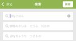

asken テックブログ
https://tech.asken.inc/
askenエンジニアが日々どんなことに取り組み、どんな「学び」を得ているか、よもやま話も織り交ぜつつ綴っていきます。 皆さまにも一緒に学びを楽しんでいただけたら幸いです！
フィード
New Relicダッシュボードコンテストを開催しました
asken テックブログ
はじめに こんにちは。バックエンドエンジニアの多田です。 今回は、New Relicのダッシュボード機能を使った社内イベントについてご紹介します！ この記事は、New Relic Advent Calendar 2024 および 株式会社asken (あすけん) Advent Calendar 2024の12/9分です。 開催の経緯 askenではオブザーバビリティのツールとして、New Relicを利用しています。 過去にシステムトラブルが発生した際、原因調査に最適化したダッシュボードを作成し、それを活用して解決につなげた経験があります。 その経験から、ダッシュボード機能を更に活用していくた…
1日前

SwiftUIをもっと使おう！iOS開発におけるUIKitとの共存戦略 1
1
asken テックブログ
はじめに UIKitベース時代 SwiftUIベースへの移行 1. アーキテクチャの変更 2. UIKitとの共存可能にする 3. アーキテクチャの共通化 4. SwiftUIのPreviewの有効化 結果 はじめに こんにちは。モバイルテックリードの大澤です。 普段はあすけんのAndroid/iOSアプリを開発しています。今回はUIKitをメインにしたiOSアプリにSwiftUIを積極的に取り入れるための施策を実施しましたので、その取り組みをわかりやすくまとめました。 主に前回記事の続編になります。 tech.asken.inc この記事は、株式会社asken (あすけん) Advent C…
4日前
SingleActivityとNavigationについて
asken テックブログ
はじめに こんにちは。asken Androidエンジニアの永井です。 大規模なAndroidアプリ開発において、複数のActivityを管理するのは複雑でパフォーマンスの低下を招く可能性があります。そこで注目したいのがSingleActivityとNavigationという強力な組み合わせです。今日はこの組み合わせがもたらすメリットについて話したいと思います。 この記事は、株式会社asken (あすけん) Advent Calendar 2024 の5日目の記事です。 SingleActivityとNavigationとは Googleが提案する遷移アーキテクチャで、従来のActivity間…
6日前

Sudachiのユーザー辞書を使ったOpenSearch検索改善について
asken テックブログ
はじめに こんにちは。コンシューマ事業部バックエンドエンジニアの髙橋です。 以前に投稿したこちらの記事に関連して、形態素解析プラグインSudachiのユーザー辞書を使ったあすけんメニュー検索改善の話をさせていただこうかと思います。 この記事は、株式会社asken (あすけん) Advent Calendar 2024の4日目の記事です あすけんメニュー検索画面 なぜ今回ユーザー辞書を使おうと思ったか あすけんの「メニュー検索」において、セブンイレブンをセブンとキーワード検索するユーザーが多い傾向がわかりました。しかし、あすけんではセブンの略称では検索としてヒットしません。そのため、セブンと検索…
7日前
asken UXデザイナー座談会：UXデザイナーの仕事の背景 8
asken テックブログ
はじめに こんにちは。テックブログ編集部の齋藤です。 askenエンジニアの座談会シリーズの番外編第二弾として、デザイナー座談会の模様をお届けします！UXデザイナー2名に加え、進行役として前回に引き続きPdMの伊藤さんにも参加いただきました。 この記事は、株式会社asken (あすけん) Advent Calendar 2024 の2日目の記事です。 参加メンバー 田仲 役職：UXデザイナー 所属：医療事業部 現在は事業部横断の行動変容プロジェクト*1 に携わっている。最近は、ディスカバリー・検証作業が主な仕事内容。前職ではアパレルのWeb業務を担当。UI設計からディレクション、マネジメントま…
8日前

AndroidリファクタリングのGithub Copilot活用の紹介
asken テックブログ
初めに こんにちは、Androidエンジニアの冨田です。今回はAndroidのソースコードのリファクタリングをGithub Copilot（Enterprise版）を活用しながら進めていきます。 まだ少しJavaをKotlin化する部分が残っているため、それを例にしていきたいと思います。 この記事は、株式会社asken (あすけん) Advent Calendar 2024 の1日目の記事です。 やらないこと アーキテクチャの変更 対象ファイル選定 ファイル間の参照関係を考慮し、被参照の数より参照数を優先しました。参照数が少ない方を優先して対象とする方法です。例えばファイルAがファイルBを参照…
9日前
Agile Japan 2024参加レポート
asken テックブログ
はじめに 2024年11月21日、22日に開催されたAgile Japan 2024に参加しました！ Agile Japan 2024のテーマは「People-Centric Agile」。AIなどの新しい技術が人間の仕事を奪うと言われる中、このイベントでは「技術は人間中心にデザインされるものであるべき」という信念が掲げられました。この時点ですでに熱い。 Agile Japan 2024 - People-Centric Agile - askenは今回、ブロンズスポンサーとしてこのイベントを支援しました！ 基調講演や多彩なセッションを通じてアジャイルの最新動向を学んだり、会場のブースで多くの…
11日前
あすけんでコントロールウィジェットに対応した話と注意点
asken テックブログ
はじめに コントロールウィジェットとは 開発環境 実装 注意点 まとめ 参考記事 はじめに こんにちは。モバイルエンジニアの大澤です。 普段はあすけんのAndroid/iOSアプリを開発しています。今回はiOS18からサードパーティ製アプリに解放されたコントロールウィジェットの対応についてまとめました。 コントロールウィジェットとは アプリのコントロールをコントロールセンターやロック画面などに追加できます。 ボタンを押すことで定義したアクションを実行できます。 種類として、ボタンとトグルがあります。 developer.apple.com 開発環境 Xcode16 Minimum Deploy…
14日前
あすけんiOSでSwiftUI導入によるアーキテクチャ改善：効率化と学び
asken テックブログ
はじめに なぜアーキテクチャ変更とSwiftUI導入を検討したのか SwiftUIの新しいアーキテクチャの選定 選定基準 MVI(model - view - intent) SwiftUI導入の手順 新規画面や書き直し可能な場合 部分的にSwiftUIを導入する場合 画面遷移 アーキテクチャ変更とSwiftUI導入後の成果 成果 課題 今後の展望 参考記事 はじめに こんにちは。モバイルエンジニアの大澤です。 普段はあすけんのAndroid/iOSアプリを開発しています。 今回はアーキテクチャ変更とSwiftUI導入について、具体的にどのように進めたのかをまとめました。 なぜアーキテクチャ変…
1ヶ月前
askenエンジニアのリモートワーク事情に迫る
asken テックブログ
はじめに こんにちは。テックブログ編集部の齋藤です。 あすけんでは、リモートワークが導入されており、多くのメンバーがリモートワークを活用して働いています。 今回は、askenエンジニアにリモートワーク事情についてアンケートをとったので、紹介します！ Q1: 出社頻度はどれくらいですか？ 出社頻度回答結果 エンジニアの多くが在籍しているプロダクト開発部では、月に1度の事業部定例は原則出社（遠方に在住のメンバーは各期1度程度）となっているので、月1程度出社のメンバーが多いですね。 （出社日の規定は2024年9月現在) Q2: リモートワークで使っている、こだわりの一品とおすすめポイントを教えてくだ…
2ヶ月前
asken PdM(プロダクトマネージャー)座談会 PdMが語る開発現場のリアルな課題
asken テックブログ
はじめに 自己紹介と各担当 組織と体制 複数のプロダクトマネージャーの課題と進化 ユーザーフィードバックと改善プロセス PdMとデザイナーの連携 PdMとエンジニアとの連携 あすけんの今後の展開とメッセージ おまけ はじめに あすけんエンジニアの座談会シリーズの番外編としてPdM(プロダクトマネージャー)座談会を開催しました。 日頃、あすけんアプリ開発をしているPdM3名 + 進行役を加えた4名による座談会になります。 自己紹介と各担当 名前: 伊藤 役職: PdM 入社5年目 中長期計画や方針の作成 PdMとUXデザイナーのチームのマネジメントを担当 名前: 大倉 役職: PdM 入社5年目…
2ヶ月前
異なる専門性のメンバーが「ルールのある対話の場」を通じてチーム一丸を目指した話
asken テックブログ
はじめに みなさん、対話してますか？ asken医療事業部の河合です。私はプロダクトマネージャーとして、多業種・多文化のメンバーが集うチームで日々プロダクトづくりに奮闘しています。 この記事では、私たちがチーム一丸を目指すために「ルールのある対話の場」を活用し、それを通じてチーム体制の刷新や、信頼関係の土台を構築できたという事例を紹介します。 私たちのミッション 弊社askenには、多業種・多文化のメンバーが集まっています。 その中でも、私の所属する医療事業部では、エンジニア、デザイナー以外にも管理栄養士、医師、薬事担当など、多岐にわたる専門職のメンバーが集まっています。まさに多文化・多業種の…
2ヶ月前
DroidKaigi2024にいってきた
asken テックブログ
はじめに Androidエンジニアの冨田です。 今回はDroidKaigi2024に行ってきたのでその内容をざっくりレポートします！ 初参加だったので全力で楽しんできました！ DroidKaigiとは https://2024.droidkaigi.jp/ セッションがあったり企業ブースがあったり、Android技術情報の共有の場です。1年に1度開催していて、今回で10周年とのこと。 前夜 まずオンラインでチケットを買うと色々届きます。 ご挨拶状だったり名札だったり。名札は付属のシールでデコレーションしてね！とのことなのでデコりました。こういった細かい準備により前日からワクワクしますね。最近買…
3ヶ月前
あすけんメニュー検索にOpenSearchを導入した話
asken テックブログ
はじめに こんにちは。コンシューマ事業部バックエンドエンジニアの高橋です。 今回は食事メニュー検索機能にOpenSearchを導入したことについて、お話しさせて頂こうと思います。あすけんメニュー検索画面 なぜ導入しようと思ったのか あるデイリースクラムにて「『”水羊羹 とらや”』では検索できるのに、『”水ようかん とらや” 』では検索できない」という指摘がでてきました。確かにそれはユーザーにとって検索できない理由がわからず、ユーザビリティが低いと感じました。また、以前から「探したい食品がなかなか検索でヒットしない」という改善要望もありました。それらが今回の導入のきっかけです。 以前のメニュー検…
3ヶ月前
スクフェス仙台2024で登壇しました
asken テックブログ
askenの宮田です。先日、Scrum Fest Sendai 2024に登壇しましたので、当日の様子や当日話しきれなかったことなどをご紹介させていただきます！ 会場の様子 https://www.scrumfestsendai.org/ スクラムフェス仙台はアジャイルコミュニティの祭典です。 アジャイルやスクラムのエキスパートと繋がりを持ちましょう。この祭典は初心者からエキスパートまで様々な参加者が集い、学び、楽しむことができます。 参加者同士でアジャイルやスクラムのプラクティスについての知識やパッションをシェアするだけでなく、ここで出会ったエキスパートに困りごとを相談することもできます。 …
3ヶ月前
PICTとPythonを使って大量にテスト用の画像データを生成してみた
asken テックブログ
こんにちは、コンシューマ事業部プロダクト開発部の入江です。 あすけんではバックエンドの開発を担当しています。 今回はPICTとPythonを使ってテスト用の画像を大量に作成してみた話をします。 今回やりたかったこと 現在askenではPHPからKotlinへのリアーキテクチャを段階的に実施中です。 現在、画像アップロード機能を移行しています。 この機能ではアップロードした縦横サイズやExifの情報に応じて処理が分岐しており、テストするためには画像のサイズやExifを因子とした多種多様なファイルを用意する必要がありました。 Exifとは写真の中に埋め込まれるメタデータであり、撮影日時、GPS情報…
4ヶ月前
AWS GameDay に参加して入賞しました
asken テックブログ
インフラエンジニアの沼沢です。 AWS GameDay というイベントに、岩間、西、鈴木、沼沢の4人で参加してきました。 AWS GameDay とは AWS GameDay は、チームベースの環境で、AWS ソリューションを利用して現実世界の技術的問題を解決することを参加者に課題として提示する、ゲーム化された学習イベントです。 https://aws.amazon.com/jp/gameday/ より引用 GameDay には様々なテーマのものがあるようですが、今回参加した GameDay は「セキュリティインシデントを疑似体験する」というもので、実際に起こり得る攻撃を受けたと想定して調査す…
4ヶ月前
ECS・Fargate環境で、JVMクラッシュ時のエラーログをS3に保存する
asken テックブログ
はじめに こんにちは。バックエンドエンジニアの齋藤です。 現在PHP→Kotlinへのリアーキテクチャを進めていますが、最近実装した機能でリリース前の負荷テストを行ったところ、JVMのクラッシュが発生しました。 リアーキプロジェクトでは、ECS・Fargate環境を利用していますが、JVMがクラッシュするとタスクが終了してしまい、エラーログ（hs_err_pidxx.log）を確認できず、また高負荷環境でのみクラッシュが発生するためローカルで再現もできず困っていました。ChatGPTから「S3に保存する方法がよいらしい」という情報をもらい、クラッシュ時にS3にログを保存して、後で確認できるよう…
4ヶ月前
あすけんテックブログ活用報告
asken テックブログ
はじめに こんにちは。モバイルエンジニアの大澤です。 日頃はモバイルアプリ開発する傍らでテックブログ運営にも携わっています。 テックブログを開始して、約4年が経とうとしています。 その４年間の活動報告をまとめます。 テックブログのミッション テックブログを通じて、達成したいことや目的は下記になります askenの行う事業の技術的観点でのPR 優秀なエンジニアを採用するための技術関連の発信 各エンジニアが社外への技術アピールの場 テックブログの来歴 2021年4月人事平賀からエンジニア陣へ、テックブログ開設を相談し、大澤が参加 2021年 8月 運営開始 初記事を投稿 2022年 8月 累計記事…
4ヶ月前
あすけんエンジニアの座談会：askenを支えるインフラエンジニアたちの挑戦
asken テックブログ
あすけんエンジニアの座談会第3回目は、インフラエンジニア編となります。 インフラエンジニア2名 + 進行役を加えた3名による掛け合いをどうぞ。 (写真左から) 鈴木 一帆 | Suzuki Kazuho インフラエンジニア 2人目のインフラエンジニア。2023年9月入社。お酒好き。日本酒とハイボールを飲んでます。 神奈川在住。ベイスターズにだんだんハマり、最近DAZNを契約してしまった。 ニックネームは「かずっぽさん」 西 秀和 | Hidekazu Nishi プロダクト開発グループマネージャー エンジニアリングマネージャー あすけんアプリのエンジニアリングマネージャー。2024年4月入社。…
5ヶ月前
Kotlin Fest 2024 参加レポート
asken テックブログ
はじめに こんにちはモバイルエンジニアの大澤です。 日頃の業務はあすけんのiOS / Androidアプリの開発をやっています。 2024/06/22に開催されたKotlin Fest 2024に参加しました。 弊社ではKotlinを採用したプロジェクトが多いので報告も兼ねてまとめます。 www.kotlinfest.dev セッションまとめ たくさんのセッションが行われましたが自分が見たセッションをベースにまとめました。 KotlinConf 2024 を後から256倍楽しむためのヒント 堀岡 勝 @masaruhr docs.google.com KotlinConf 2024をセッション…
5ヶ月前
モバイルミッションステートメント
asken テックブログ
はじめに こんにちは。冨田です。 普段は新機能開発から技術改善、リリースまでいろんなことをやっているAndroidエンジニアです。今回はaskenのモバイルメンバーでモバイルミッションステートメントやりました。その内容について説明したいと思います。 メンバーはiOS3名、Andoird4名の合計７人です。 ミッションステートメントって？ 直訳するとミッションは「使命」、ステートメントは「声明」となります。 立場を踏まえた上でやるべきことの認識を合わせ、その内容をはっきり固めて掲げていくことを指してます。 なぜやるのか 理由は色々あります。 長期課題、技術改善の属人化 新機能の開発などと並行して…
5ヶ月前
あすけんエンジニアの座談会：未来を語り合う現場のリアルな一幕
asken テックブログ
現在askenには、約20名のエンジニアが在籍し、様々な経験・技術をもったメンバーが集まり、それぞれの強みを活かしながら日々サービス開発に取り組んでいます。今回は、あすけんアプリのバックエンドエンジニア達にインタビューしてみました。
5ヶ月前
【2024年度】あすけんiOSアプリの開発環境を紹介します！
asken テックブログ
はじめに コンシューマ事業部iOSエンジニアの三浦です。 コンシューマ事業部では「あすけん」の開発に取り組んでいます。 「あすけん」モバイルアプリ版の開始が2013年と、10年以上の歴史があるサービスです。長らく施策実装に注力してきましたが、反面、開発環境の最適化や技術的な改善まで手が回っていませんでした。 この課題に対処するため、昨年度からは技術改善に特化したチームが発足し、開発体制と技術の両面での改善を進めてきました。 今回は、そうした取り組みも踏まえ、2024年6月現在のあすけんiOSアプリの開発環境についてご紹介します。 技術スタック 使用言語 言語比率は Swift 99%、Obje…
5ヶ月前
インフラチームのタスクを支えるドキュメント施策の紹介
asken テックブログ
はじめに インフラエンジニアの鈴木です。半年ほど前にaskenに入社しました。 私が2人目のインフラエンジニアだったため、インフラでチームができたのをきっかけに、チームでの進め方を整理してきました。 今回は、インフラチームで実施している施策について紹介したいと思います。 インフラチームでのタスクには、新しい環境を構築したり、設定修正を行ったりすることがありますが、タスクを円滑に進めるための施策をチームで取り組んでいます。 施策にはドキュメント以外もありますが、今回はドキュメント関連にフォーカスします。 正直、この施策のおかげで、入社して半年程度でもスムーズに働けています。 どんなことをやってい…
6ヶ月前
あすけんエンジニアの座談会：モバイル開発の舞台裏に迫る！
asken テックブログ
こんにちは、askenテックブログ編集部の平賀です。 日頃はaskenの人事採用を担当しています。 wantedly 現在askenには、約20名のエンジニアが在籍し、様々な経験・技術をもったメンバーが集まり、それぞれの強みを活かしながら日々サービス開発に取り組んでいます。 今回は、4月から新体制になった、あすけんアプリのモバイルエンジニア達にインタビューしてみました。 askenモバイルエンジニア三人衆 （写真左から） 冨田 裕也｜ Yuya Tomita Androidエンジニア 東京都出身。新卒でアプリ開発会社へ入社。様々な企業の開発案件に携わる。大規模toC向けアプリの開発経験を経て2…
7ヶ月前
「ふりかえりカンファレンス2024」の現地参加とLT登壇のふりかえり
asken テックブログ
ふりかえりカンファレンス」に、現地での参加と LT 登壇をしてきました。今回は現地参加と LT 登壇について「**焼肉レトロスペクティブ**」でふりかえりをしたというブログです！
7ヶ月前
自分たちが求める品質とは何か
asken テックブログ
はじめに こんにちは。asken Androidエンジニア兼医療機器品質管理の高津です。 最近はQA勉強会という有志での社内活動でQAについて学び、その結果をワークショップなどで社内に展開しています。 今回は、先日開催した「自分たちが求める品質とは何か」ワークショップについて報告します。 なぜ「自分たちが求める品質とは何か」ワークショップを企画したのか QA勉強会の活動を通して実現したい理想の一つに「安定した品質でリリースできるようになる」があります。 「安定した品質」とはどんなものなのか、抽象度が高く認識が合わせられていません。 そのため、現時点で自分たちが求める、優先すべき品質とは何かを明…
8ヶ月前
全社員で取り組んだaskenコーポレートバリュー刷新~1年間の軌跡~
asken テックブログ
こんにちは。「あすけん」のプロダクトマネージャーを担当しながら、社内の「組織強化委員会」にも所属している伊藤です。 組織強化委員会とは、主にミッション・ビジョン・バリューの浸透を目的として様々な活動を行っている社内委員会です。 今回は、昨年度に1年掛けて実施した「バリュー刷新プロジェクト」の流れを一通りご紹介します。この記事を通してaskenの雰囲気を知っていただきたいですし、まさに今バリューの見直しを検討されている方にとって、何らかの参考になれば嬉しいです。 目次 バリューの役割と重要性 バリュー改訂の背景 バリュー改訂の段取り ① 従業員の思いを聞くワークショップ ② 経営陣の思いを聞くワ…
9ヶ月前
【2023年】askenエンジニアがオススメする本をまとめてみた
asken テックブログ
こんにちは。食事管理アプリ『あすけん』のモバイル開発を担当しています、大澤です。 今回、2022年7月に書いた「【2022年】askenエンジニアがオススメする本をまとめてみた」の【2023年】版を書いてみました（既に2024年になりましたが）。 tech.asken.inc 前回のまとめから、エンジニアも増えましたので、改めてエンジニア16名にアンケートをとった結果をまとめています。メンバーが増えた分、オススメしたい本が増えましたが、ぜひご覧ください。 ※書いた人…大澤のインタビュー記事 www.wantedly.com ソフトウェア開発・言語 Go言語プログラミングエッセンス https:…
9ヶ月前